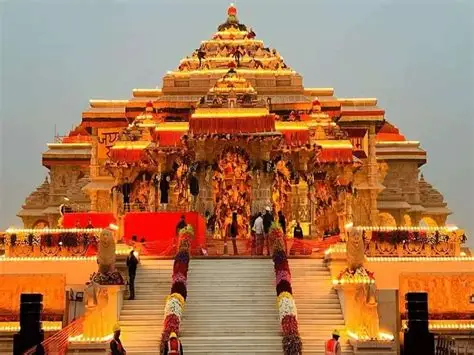

Ram Mandir
Plan time for Shri Ram Janmabhoomi Mandir darshan. Entry procedures, timings and visitor rules are set by the temple authorities and may change.

Experience the sacred places and festive spirit of Ram Nagari with a flexible darshan itinerary, stay options and local travel support.
2026 event dates: To be announced by the organisers. We will plan around the official programme once published.
Ayodhya's Deepotsav is a festival-season celebration associated with devotional gatherings, illuminated ghats and cultural programmes. The exact event schedule, access arrangements and activities change by year and are announced by the organisers.
Ramnagari Tourism can help you plan arrival, local sightseeing, hotel and cab requirements around your dates. This is a customizable travel plan, not an official event ticket or guaranteed darshan pass. No package price is published here; we will share a quote after understanding your trip.
Final order depends on temple access, local traffic, crowd controls and the official event programme.
Plan time for Shri Ram Janmabhoomi Mandir darshan. Entry procedures, timings and visitor rules are set by the temple authorities and may change.
A revered hilltop temple commonly included in Ayodhya's spiritual circuit. Allow for walking and queues, especially during festival dates.
A historic temple visit that pairs well with the central Ayodhya darshan route. Visit order can be adjusted to local access conditions.
Riverside steps along the Sarayu, often part of evening walks and festival viewing plans. Crowd restrictions may apply during major events.
Include aarti viewing subject to the day's timings, riverfront access and local administration instructions. Timings are not guaranteed in advance.
Illumination and cultural activities vary each year. We will align the itinerary only with the official schedule once it is announced.
Choose fewer or more nights in the enquiry form. Day order and visit times are confirmed closer to travel.
Pickup from Ayodhya Dham railway station, Maharishi Valmiki International Airport or an agreed meeting point. Check in, review the local travel plan and keep the evening flexible for rest or a nearby riverside visit.
Plan Ram Mandir darshan, Hanuman Garhi and Kanak Bhawan around current entry rules and crowd guidance. If officially scheduled and accessible, include Ram Ki Paidi, the Deepotsav programme and Sarayu Aarti.
Breakfast and checkout, with an optional nearby stop if time, temple access and your departure connection allow. Transfer to your station, airport or onward destination.
This sample itinerary is a planning suggestion. It does not promise event entry, a specific diya display, darshan timing or aarti access.
Request budget, standard or premium hotel options, preferred location and room needs. We confirm property details, availability, amenities and cancellation terms before any booking.
Explore hotel optionsAsk for a sedan, SUV, Innova or tempo traveller based on group size, luggage and route. Airport or station transfers and local sightseeing are coordinated according to availability.
View cab servicesShare arrival details and preferences. Our team can coordinate the route, stay and local transfers in one proposed plan, then confirm each service with you.
Request a custom planAll services are proposed and confirmed individually. We do not list a price until the group, dates and selected services are known.
Your final written itinerary and quotation will specify selected services, payment terms, cancellation conditions and exclusions.
Send your travel preferences and the team will follow up to discuss availability and a clear custom quotation. Submitting this form is an enquiry, not a confirmed booking.
The event dates and programme have not been confirmed in the official sources checked. Please verify the Ayodhya district or Uttar Pradesh Tourism announcements before finalizing travel.
No. It is a flexible sightseeing suggestion. Temple access, aarti timings, event programming, road closures and crowd rules may change and are controlled by the relevant authorities.
We can help plan your route and travel timing. Darshan entry, passes, queue access and temple rules are managed by temple authorities and are not guaranteed by this tour enquiry.
Tell us your preferred hotel category, group size and vehicle type. The team will confirm available options and the applicable quotation before you decide.
No. It sends a travel enquiry. Your booking is confirmed only after the itinerary, availability, price, payment terms and applicable cancellation conditions are agreed in writing.